dflow-team 운용 매뉴얼
D'Flow WBS 에 올린 작업을 Claude Code 팀장 세션 하나가 여러 팀원 에이전트에게 나눠 동시에 개발시키고, 사람은 결과를 웹에서 승인하는 흐름을 처음부터 끝까지 설명합니다. 새 PC 와 새 프로젝트 리포에서 이 문서를 위에서부터 따라 하면 첫 팀 실행까지 갈 수 있습니다.
01한눈에 보기
dflow-team 은 Claude Code 스킬 묶음인 dflow-kit 에 들어 있는 팀장 스킬입니다. 사람이 D'Flow 웹의 WBS 에서 작업을 에이전트에게 위임하면, 팀장 세션이 그 작업을 찾아 빈 자리(슬롯)마다 팀원을 띄웁니다. 팀원은 각자 분리된 git 워크트리에서 설계, 테스트 주도 구현, 검증을 거쳐 브랜치를 push 하고 완료를 보고합니다. 사람이 웹에서 승인하면 팀장이 그 브랜치를 개발 브랜치에 머지합니다.
agent 태그를 켭니다.역할과 책임
| 주체 | 하는 일 | 하지 않는 일 |
|---|---|---|
| 사람 | 작업 명세(spec) 작성, 담당자 배정, 에이전트 위임, 결정 요청에 답하기, 승인·반려 | 팀원 화면에서 코드를 직접 고칠 필요는 없습니다. |
팀장 /dflow-team | 대기 작업 감시, 팀원 띄우기·거두기·재시작, 결과 기록, 승인 스윕(머지), 좌석표 신호 | 대상 리포의 소스를 고치거나 빌드·테스트를 직접 돌리지 않습니다. 팀장 문맥은 몇 시간을 버텨야 하는 공용 자원이기 때문입니다. |
팀원 /dflow-dev --worker | 자기 작업 1건의 claim, 설계, 구현, 검증, push, 완료 보고 | 다른 작업에 claim·보고하지 않고, 사람에게 직접 질문 창을 띄우지 않습니다. |
sequenceDiagram
actor H as 사람
participant W as D'Flow 웹
participant L as 팀장
participant M as 팀원 (워크트리)
participant R as origin 리포
H->>W: 담당자 배정 + agent 태그
L->>W: poll.sh 로 대기 작업 조회
W-->>L: 대기 작업 (id8, 이름)
L->>M: 워크트리 만들고 claude 실행
M->>W: claim (단계 ds, 설계 중)
M->>M: Design 후 build-start (ds → ip)
M->>M: Build (TDD, 게이트)
M->>M: Verify (감사자 셋 + 작성자)
M->>R: agent 브랜치 push
M->>W: 완료 보고 (단계 im, 검수 대기)
M-->>L: .result 파일 (done)
L->>H: 승인 대기 알림
H->>W: 승인 (단계 xx, 완료)
L->>R: 승인 스윕: 개발 브랜치에 --no-ff 머지
꼭 구분해야 할 두 가지 상태
D'Flow 의 작업 주문(order)에는 성격이 다른 두 값이 있습니다. 둘을 섞어 읽으면 화면과 로그가 어긋나 보입니다.
| 축 | 값 | 쓰임 |
|---|---|---|
| status (주문 생애주기) | ready 대기 → claimed 진행 중 → reported 승인 대기 → approved 승인됨. 그 밖에 cancelled 중단 | 에이전트가 무엇을 해도 되는지 정합니다. dflow.sh list 는 RD·CL·RP·AP 로 줄여 보여 줍니다. |
| stage (WBS 진척 단계) | as 할당됨 · ds 설계 중 · ip 작업 중 · im 검수 대기 · xx 완료 | WBS 실적%(크레딧)와 화면 단계 칩을 정합니다. |
02필요한 도구
킷 설치 스크립트와 팀장의 시작 전 검사가 아래 명령이 있는지 확인합니다. 스크립트에 버전 하한은 적혀 있지 않으므로 패키지 관리자의 최신판을 쓰면 됩니다.
| 도구 | 쓰는 곳 | 없을 때 |
|---|---|---|
git | 워크트리, 브랜치, 머지. 팀원은 git 을 절대경로로 부릅니다. | 킷 install.sh 가 필요한 명령이 없다: … 를 내고 exit 2 로 멈춥니다. |
curl | dflow.sh 가 D'Flow Agent API 를 부를 때 | |
jq | dflow.sh·poll.sh·팀장 이벤트 기록 | |
gh | 완료 보고의 --auto-links, 리포 생성 | |
python3 (또는 python) | WBS 파일 생성·검증·내보내기 스크립트 | |
claude (Claude Code CLI) | 팀원을 대화형 claude 프로세스로 띄웁니다. | 팀장 검사가 NO_CLAUDE_CLI 로 멈춥니다. |
tmux 또는 Orca | 팀원을 띄울 화면(pane·탭) | 둘 다 없으면 NO_TMUX 로 멈춥니다. |
brew install git jq gh tmux python
# Claude Code 는 공식 설치 안내대로 설치하고, 터미널에서 claude 가 실행되는지 확인합니다.
claude --versionsudo apt install git curl jq tmux python3
# gh 는 GitHub CLI 공식 저장소 안내대로 설치합니다.팀원을 띄우는 화면: tmux 와 Orca
팀장 세션이 Orca 안에서 돌면 Orca 탭에, 그 밖이면 tmux pane 에 팀원을 띄웁니다. 예전의 비대화형 프로세스 방식(claude -p)은 2026-09-16 에 없어졌습니다. 사람이 화면을 보거나 결정 요청에 맥락을 지킨 채 답할 자리가 없었기 때문입니다.
| tmux | Orca | |
|---|---|---|
| 팀원 화면 보기 | TMUX= tmux -L dflow attach | w<슬롯> · <TSK> <id8> · <작업 이름> 탭 |
| 팀장 세션이 죽으면 | 팀원은 계속 돕니다. 다시 띄운 팀장이 살아 있는 팀원을 이어받습니다. | |
| 주의 | 팀장은 PATH 의 tmux 가 아니라 실제 tmux 실행 파일의 절대경로를 찾아 씁니다. | Orca 는 PATH 앞에 tmux 흉내 스크립트를 끼웁니다. 이것은 진짜 tmux 가 아니어서 팀장이 걸러 냅니다. Orca 가 오래된 판이면 ORCA_OLD 로 멈춥니다. |
코드 경로(MSYS2 tmux, CLAUDE_PID 검사, 줄끝 LF 고정)는 검증을 마쳤지만, 실제 Windows 세션에서 팀을 돌려 본 기록은 아직 없습니다. 특히 Claude Code 가 Bash 도구에 CLAUDE_PID 를 내보내지 않으면 팀장이 NO_CLAUDE_PID 로 시작하지 않습니다. 가능하면 macOS·Linux 에서 팀장을 돌리십시오.
03킷 설치
스킬의 정본은 wbs-web 리포에 있고, 배포본은 GitHub 의 jongik-sv/dflow-kit 입니다. 킷은 PC 마다 한 번 받아 두고, 작업할 프로젝트 리포마다 설치합니다.
- 킷을 받습니다.
git clone git@github.com:jongik-sv/dflow-kit.git ~/dflow-kit
- 프로젝트 리포에 설치합니다.
~/dflow-kit/install.sh ~/project/<내 리포> # 좌석표 훅까지 한 번에 받으려면(6장 참고) ~/dflow-kit/install.sh ~/project/<내 리포> --hooks - 스킬을 리포에 커밋하고 기본 브랜치에 push 합니다. 팀원 워크트리는
origin의 스킬을 쓰기 때문에, push 하지 않으면 팀장이KIT_NOT_PUSHED로 시작을 거부합니다.cd ~/project/<내 리포> git add .claude/skills .dflow .gitignore .gitattributes .claude/settings.json git commit -m "dflow-kit 설치" git push
.dflow.local은 개인 토큰이 들어가므로 절대 커밋하지 않습니다. install.sh 가.gitignore에 이미 넣어 두었습니다.
install.sh 가 하는 일
| 순서 | 내용 |
|---|---|
| 1 | git·curl·jq·gh·python3 가 있는지 확인합니다. |
| 2 | 스킬 7종을 <리포>/.claude/skills/dflow-* 에 폴더째 덮어씁니다. 사본에서 고친 내용은 다음 설치 때 사라지므로 스킬은 고치지 않습니다. |
| 3 | .dflow·.dflow.local 초안을 만들고(이미 있으면 두고), .gitignore 에 .dflow.local 을, .gitattributes 에 스킬 줄끝 LF 고정을 더합니다. 예전 .env 방식으로 잘 돌던 리포는 초안을 만들지 않고 그대로 둡니다. |
| 4 | --hooks 면 좌석표 훅을 ~/.dflow/hooks/heartbeat.sh 에 복사합니다. 등록은 사람이 합니다. |
| 5 | Gradle 리포면 권장 설정을 점검합니다(14장). |
| 6 | .claude/settings.json 의 permissions.allow 에 이 PC 의 git 절대경로 규칙을 더합니다. |
| 7 | 킷 VERSION 을 .claude/skills/DFLOW_KIT_VERSION 으로 남깁니다. |
| 스킬 | 역할 |
|---|---|
dflow-work | dflow.sh: D'Flow Agent API 래퍼(me·list·show·claim·progress·done·release·doctor). 모든 스킬의 기반입니다. |
dflow-dev | 작업 1건의 개발 사이클(착수 판정 → 설계 → TDD → 검증 → 보고) |
dflow-team | 팀장. 위임 작업을 여러 팀원에게 나눠 동시에 개발시킵니다. |
dflow-merge | 승인된 작업 브랜치를 개발 브랜치에 반영합니다(조상 순서, --no-ff). |
dflow-poll | 위임 작업을 하나씩 감시해 착수합니다(팀장 없이 쓰는 반자동 루프). |
dflow-wbs-nlevel · dflow-export | WBS 파일 작성·검증과 D'Flow 업로드용 변환 |
킷 갱신
cd ~/dflow-kit && git pull && ./install.sh ~/project/<내 리포>
# 갱신한 스킬도 커밋·push 합니다. 좌석표 훅을 쓰면 --hooks 도 다시 붙입니다.dflow.sh doctor 가 계약 major 불일치 를 알리거나 팀장이 OLD_DFLOW_DEV·OLD_DFLOW_MERGE 를 내면 이 절차로 갱신합니다.
04D'Flow 웹 준비
개인 액세스 토큰(PAT) 발급
오른쪽 위 계정 메뉴에서 /account 로 들어가 「개인 액세스 토큰(PAT)」 영역의 「새 토큰 발급」 폼을 씁니다.
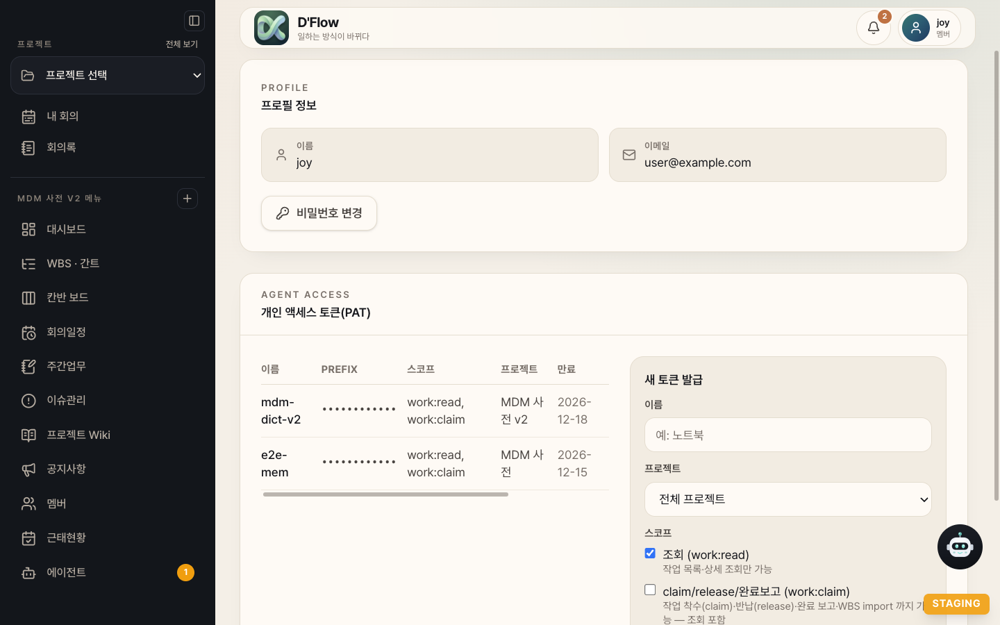
/account 의 PAT 영역입니다. 토큰 PREFIX 와 이메일은 가렸습니다. 팀장에 쓸 토큰은 스코프 두 개(work:read, work:claim)를 모두 고릅니다.| 항목 | 고를 값 |
|---|---|
| 이름 | PC 나 용도를 알아볼 이름(예: 맥북-팀장) |
| 프로젝트 | 이 토큰으로 일할 프로젝트. 비우면 전체 프로젝트입니다. |
| 스코프 | work:read(조회)와 work:claim(착수·반납·완료 보고·WBS import, 조회 포함) |
| 만료 | 30·90·180일 중 하나(기본 90일) |
바로 복사해 .dflow.local 의 pats= 에 넣으십시오. 채팅, 커밋, 명령 문자열, 화면 공유에 붙여 넣지 않습니다.
프로젝트 역할
토큰 주인 계정은 그 프로젝트의 멤버 이상이어야 claim 할 수 있습니다. 역할이 없으면 조회만 되고 claim 은 forbidden_role(exit 5)로 거부됩니다. 승인은 프로젝트 관리자(또는 그 작업의 상위 항목 담당자인 서브트리 관리자)만 할 수 있습니다.
작업을 에이전트에게 맡기기
팀장이 작업을 가져가려면 아래 조건이 모두 맞아야 합니다. 한 가지라도 빠지면 작업은 화면에 보여도 자동 루프에 걸리지 않습니다.
- 명세(spec)를 채웁니다. 비어 있으면 팀원이 "제목만으로 요구사항을 지어낼 수 없다"며 착수를 거부합니다. 수용 기준이 구체적일수록 결과가 좋습니다.
- 담당자를 팀장이 쓰는 토큰의 계정으로 정합니다. 팀장은
list --scope assigned로 조회하므로 담당자가 다르면 보지 못합니다. - 「에이전트 위임」을 켭니다. 작업 명세 패널의 체크박스를 켜면 그 작업의 태그에
agent가 붙습니다. 에이전트 허브의 위임 표에서 여러 작업을 한 번에 켤 수도 있습니다. - 선행 작업을 확인합니다. 선행이 끝나지 않았으면 팀원은 설계까지만 먼저 하고 선행을 기다립니다(10장 「설계 선행」).
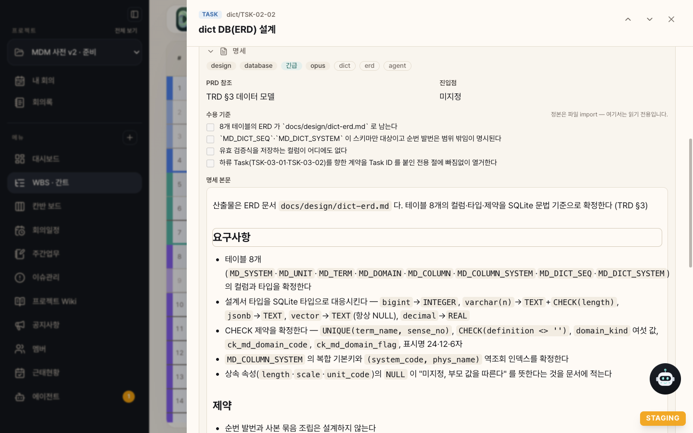
agent 가 위임 표시입니다. 수용 기준과 명세 본문이 팀원의 요구사항 입력이 됩니다.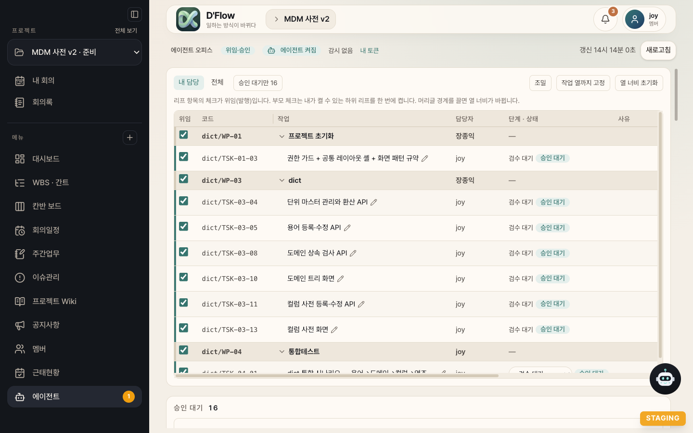
슈퍼유저는 프로젝트 멤버 명단에 자동으로 들어가지 않아 WBS 담당자로 고를 수 없는 경우가 있습니다. 팀장용 토큰은 그 프로젝트에 멤버로 등록된 계정으로 발급하는 편이 안전합니다.
도커가 꼭 필요한 작업(Testcontainers 등)에는 docker 태그를 함께 답니다. 이 태그가 없으면 팀원은 도커를 쓰지 않고, 생략한 검증을 보고서에 남깁니다.
05설정 파일
리포 최상위에 두 파일을 둡니다. .dflow 는 팀 전체가 같은 값을 쓰는 공용 설정이라 커밋하고, .dflow.local 은 토큰과 개인 브랜치가 들어가므로 커밋하지 않습니다.
.dflow (커밋)
api_base=https://wbs-web.vercel.app project_id=<프로젝트 UUID, 프로젝트 URL /p/<UUID>/ 의 값> release_branch=main # no_docker=1 # dialect_check=cd src/backend/mdm && ../gradlew :api:mssqlMigrationTest --no-daemon --console=plain
| 키 | 뜻 | 비우면 |
|---|---|---|
api_base | D'Flow 서버 주소 | 필수입니다. |
project_id | 이 리포가 속한 D'Flow 프로젝트 UUID | 서브시스템마다 프로젝트가 다르면 비우고 각자 .dflow.local 의 project_map 을 씁니다. |
release_branch | 운영 브랜치. 개발 브랜치를 승격해서만 들어갑니다. | 원격 기본 브랜치(origin/HEAD) |
no_docker | 1 이면 docker 태그가 있어도 도커를 막습니다. | 태그가 있는 작업만 허용 |
dialect_check | 승인 스윕이 머지 뒤 한 번 돌리는 DB 방언 검증 명령 | 그 단계가 없습니다. |
스테이징 서버로 시험할 때는 파일을 고치지 말고, 그 세션에서만 export DFLOW_API_BASE=… 로 덮습니다.
.dflow.local (개인, 커밋 금지)
pats=<발급한 토큰. 여러 개면 쉼표로, 첫 토큰이 기본> as= dev_branch=<내 개발 브랜치. 운영 브랜치에서 직접 개발하면 main> automerge=0 # project_map=docs/c10=<uuid> # no_docker=1 # build_model_trial=sonnet # build_model_trial_rate=30 # build_model_trial_tasks=TSK-02-05,WP-03 # worker_keep_skills=auto # worker_skills_off= # worker_keep_plugins=auto # worker_output_style=default
| 키 | 뜻 | 기본 |
|---|---|---|
pats | 개인 액세스 토큰. 쉼표로 여러 개를 넣을 수 있고, 하나면 pat= 도 됩니다. | 필수 |
as | 토큰이 둘 이상일 때 이 리포가 쓸 토큰의 prefix. 목록은 dflow.sh profiles 로 봅니다. | 첫 토큰. /dflow-team 은 비어 있으면 시작할 때 묻고 적습니다. |
dev_branch | 에이전트 머지·스택 기점·반영 확인의 기준 브랜치. 원격에 먼저 push 돼 있어야 합니다. | 필수(NO_DEV_BRANCH) |
automerge | 1 이면 완료 보고 즉시 개발 브랜치에 머지하고 승인은 사후에 확인합니다(12장). | 0 |
project_map | 내가 맡은 서브시스템 문서 폴더와 프로젝트 UUID 짝(docs/c10=<uuid>) | 비움 |
no_docker · dialect_check | .dflow 의 같은 키를 이 PC 에서만 덮습니다(JAVA_HOME 같은 PC 전용 값). | 미기입 |
build_model_trial* | Build 모델 시험 스위치(14장) | 꺼짐 |
worker_* | 팀원 첫 턴 컨텍스트 줄이기(14장) | 종전 동작 |
값의 우선순위는 이미 export 된 환경변수 → 파일 값 → 옛 .env 순입니다. 두 파일이 모두 받는 키는 .dflow.local 이 이깁니다. 한쪽 파일만 있으면 NO_LOCAL 또는 NO_DFLOW 로 멈춥니다.
.claude/skills/dflow-work/scripts/dflow.sh config --source # mode=new|legacy, 읽은 파일 경로 .claude/skills/dflow-work/scripts/dflow.sh config dev_branch # 비밀이 아닌 키 값 .claude/skills/dflow-work/scripts/dflow.sh profiles # 토큰별 prefix·이름·이메일·프로젝트
06훅 설치
좌석표 heartbeat 훅 (권장)
D'Flow 의 에이전트 오피스 화면이 "진행 중·무응답·끊김"을 구분하려면, 에이전트가 도구를 쓸 때마다 최대 60초에 한 번 신호가 서버에 가야 합니다. 이 신호를 Claude Code 의 PostToolUse 훅이 보냅니다. 같은 훅이 사람이 웹에서 누른 「중단」도 받아 세션을 세웁니다.
- 훅 파일을 설치합니다.
~/dflow-kit/install.sh ~/project/<내 리포> --hooks
~/.claude/settings.json의hooks.PostToolUse배열에 원소를 하나 더합니다. 기존 원소는 그대로 둡니다.~/.claude/settings.json{ "matcher": "*", "hooks": [ { "type": "command", "timeout": 5, "command": "if [ -x \"${HOME-}/.dflow/hooks/heartbeat.sh\" ]; then /bin/sh \"${HOME-}/.dflow/hooks/heartbeat.sh\"; else cat >/dev/null 2>&1 || :; fi" } ] }- 확인합니다. 팀을 돌리는 동안 오피스 화면의 좌석이 1~2분 간격으로 갱신되면 됩니다.
훅은 진행 중 작업이 있는 에이전트 워크트리에서만 신호를 보내고, 조건이 맞지 않으면 아무것도 출력하지 않고 끝납니다. 토큰은 .dflow.local 의 첫 토큰을 쓰며 출력하거나 기록하지 않습니다. 훅은 PC 마다 따로 설치하고, 킷을 갱신하면 --hooks 로 다시 설치합니다.
자동으로 붙는 것
- 긴 명령 timeout 가드: 팀원 전용 설정에 자동으로 걸립니다. 무거운 명령을 timeout 없이 부르거나 백그라운드로 돌려 완료 알림을 잃는 사고를 막습니다. 팀장 없이 쓰는
/dflow-dev세션에도 걸고 싶으면 킷 README 의 선택 절차를 따릅니다. - 사용량 상태줄: 팀원 전용 설정이 5시간·주간 사용량과 해제 시각을
~/.dflow/limits/<id8>.json에 기록합니다. 팀장은 이것으로 한도에 걸린 팀원을 기다렸다가 다시 띄웁니다.
07설치 확인
.claude/skills/dflow-work/scripts/dflow.sh doctor
base: https://wbs-web.vercel.app 프로필 1: OxMb1D1097Qz 맥북-에어 alice@example.com (계약 2.9, 프로젝트 3) [선택됨]
| 출력 | 뜻과 처리 |
|---|---|
프로필 N: <prefix> 인증 실패 | 토큰이 만료·폐기됐습니다. /account 에서 다시 발급합니다. |
⚠ 계약 major 불일치(서버 X / 스킬 Y) | 킷이 오래됐습니다. 킷을 갱신합니다(minor 차이는 경고하지 않습니다). |
⚠ 계약 버전 확인 불가 | 서버 응답 문제입니다. 킷 갱신으로는 풀리지 않으니 서버 배포를 확인합니다. |
⚠ DFLOW_AS=… 에 맞는 토큰이 없습니다 | as= 값이 어느 토큰 prefix 와도 맞지 않습니다. |
NO_DEV_BRANCH … | .dflow.local 에 dev_branch= 를 적습니다. |
마지막으로 Claude Code 를 리포 루트에서 엽니다. 스킬이 프로젝트 범위(.claude/skills/)에 있어 작업 폴더가 리포 루트여야 /dflow-team 이 보입니다.
08팀장 시작하기
팀장 세션을 시작하기 전에 두 가지를 맞춥니다. 체크아웃이 개발 브랜치(또는 detached HEAD) 위에 있어야 하고, 작업 트리에 커밋하지 않은 변경이 없어야 합니다.
/dflow-team [인원] <종료시각|종료 요청 전까지> [모델] [effort] [WP-XX…] [설계만|구현부터] /dflow-team help
| 인자 | 예 | 뜻 |
|---|---|---|
| 종료 시각 (유일한 필수) | 18:00 · 3일 뒤 06:00까지 · 월요일 09:00 · 종료 요청 전까지 | 새 배정을 멈추는 시각입니다. 이미 지난 오늘 시각은 되묻고, 날짜 붙은 시각은 7일 이내만 받습니다. |
| 인원 | 2명 · 4명 | 동시 팀원 수. 기본 3명, 상한은 min(6, K+2) 입니다(K 는 PC 의 무거운 명령 슬롯 수, 16GB PC 는 4명, 32GB 이상은 6명). |
| 모델 | opus · sonnet | 팀원 모델. 없으면 기본 모델입니다. |
| effort | low~max | 팀원 추론 강도. 기본 high 입니다. |
| WP 범위 | WP-02 · dict/WP-02 | 새 배정만 그 WP 로 좁힙니다. 재개와 승인 스윕은 범위와 무관합니다. |
| 실행 범위 | 설계만 · 구현부터(개발자동) | 없으면 설계부터 마감까지 다 합니다. 설계만은 설계를 마치고 사람의 검토를 기다리며 멈춥니다. 구현부터는 개발 브랜치에 사람이 쓴 설계(<작업 폴더>/design.md)나 검토를 마친 설계에서 구현합니다(10장 「설계만·구현부터」). |
--resume <id8> | 443b8ffe 재개 | 이 PC 에 워크트리가 없거나 멈춘 작업을 사람이 지목해 이어받습니다. |
--takeover | 넘겨받기 | 같은 신원이 다른 PC 에서 쥔 팀장 자리를 빼앗습니다. 밀려난 팀장은 약 1분 안에 멈춥니다. |
/dflow-team 18:00 # 오늘 18시까지, 팀원 3명 /dflow-team 4명 18시까지 opus # 팀원 4명, opus /dflow-team 18:00 WP-02 # WP-02 작업만 새로 배정 /dflow-team 3일 뒤 06:00까지 # 사흘 동안 무인 운용 /dflow-team 종료 요청 전까지 WP-03 # 멈추라고 할 때까지 WP-03 만 /dflow-team 18:00 설계만 # 설계까지만 하고 검토를 기다린다 /dflow-team 18:00 구현부터 # 검토를 마친 설계·사람이 쓴 설계로 구현
시작하면 일어나는 일
- 토큰 결정.
pats에 토큰이 둘 이상이고as=가 비어 있으면 어느 계정으로 돌지 한 번 묻습니다. - 시작 전 검사. 리포 루트 여부, 경로 공백, 개발 브랜치, 스킬 버전, 설정·인증, 화면 백엔드, 팀장 잠금과 서버 lease 를 한 번에 검사합니다. 하나라도 실패하면 아무것도 띄우지 않고 사유 코드를 냅니다(16장).
- 작업 폴더 준비와 재구성. 배정된 대기 작업의
state.json을 미리 만들고, 이전 실행에서 남은 팀원 워크트리를 흡수합니다. 이어받을 수 없는 것은 「멈춤」 표에 올립니다. - 시작 보고. 종료 시각, 쓰는 계정(이름·이메일·prefix), 「멈춤」 표, 경고, 팀원 화면 보는 법을 알려 줍니다.
- 첫 승인 스윕을 한 번 돌고, 빈 슬롯에 팀원을 띄운 뒤 감시를 시작합니다. macOS 에서 여러 날 돌리면 절전 방지(
caffeinate)도 겁니다. 전원을 연결하고 덮개를 열어 두십시오.
팀원 화면
tmux 백엔드에서는 다른 터미널에서 TMUX= tmux -L dflow attach 로 팀원 화면을 봅니다. 팀원 pane 테두리에 w<슬롯> · <TSK> <id8> · <작업 이름> 이름표가 뜨고, 팀원이 늘거나 줄 때마다 바둑판 배치로 다시 정렬됩니다.
● Phase 03 Build: 구현 단위 B2 heavy.sh ./gradlew :api:test --tests '*TermApi*' HEAVY_SLOT slot-1 k=2 waited=14s BUILD SUCCESSFUL in 41s UNIT_DONE B2 ● 게이트: 기준선 대비 신규 실패 0, 테스트 1060 → 1074
● Phase 04 Verify: 감사자 셋 + 작성자 AUDIT_RESULT spec 0 AUDIT_RESULT review 1 AUDIT_RESULT tests 0 MUTATION_RESULT M3 caught rc=1 sec=38 e2e=no log=… ● 지적 1건을 작성자에게 넘깁니다.
● Phase 02 Design
design.md: 접근 · 파일 목록 · 테스트 전략
· 수용 기준 매핑 · 불변 규칙
● build-start → 403 dependency_not_met
선행 dict/TSK-02-08 구현 중
● 설계를 push 하고 선행 완료를 기다립니다(wait_pred).● Phase 06 마감 git push origin agent/77e1a0b9-column-map dflow.sh done … --auto-links --decisions … reported(승인 대기) — PM 승인은 웹에서 ● 승인 대기로 보고했습니다.
HEAVY_SLOT·AUDIT_RESULT·MUTATION_RESULT·UNIT_DONE·완료 보고 문구는 스크립트의 실제 출력 형식을 따랐고, 작업 이름과 숫자는 꾸민 값입니다.› /dflow-team 4명 18:00 ● 종료 18:00(오늘) · 계정 alice(맥북-팀장, OxMb1D10) · 백엔드 tmux · 팀원 4명 팀원 화면: 다른 터미널에서 TMUX= tmux -L dflow attach ● 승인 스윕: 머지 0, 대기 1. 감시 시작. ● a1b2c3d4 용어 등록·수정 API → w1 착수 ● 9f8e7d6c 도메인 상속 검사 API → w2 착수 ● 5a4b3c2d 도메인 트리 화면 → w3 착수(선행 구현 중, 설계 먼저) ● 77e1a0b9 컬럼 시스템 매핑 API → w4 착수 … ● w4 done(승인 대기로 보고). 대기 중이던 3c9d0e11 → w4 착수. ● 결정 필요 9f8e7d6c: "상속 깊이 상한을 8로 둘까요, 무제한으로 둘까요?" TMUX= tmux -L dflow attach 로 붙어 그 pane 에서 답하거나, 이 세션에 "9f8e7d6c <답>" 으로 답하세요.
flowchart LR
subgraph S["D'Flow 서버"]
Q["위임된 대기 작업"]
end
subgraph L["팀장 세션"]
P["poll.sh 180초"]
T["tick.sh 20초"]
K["wake.sh 기상마다"]
SW["승인 스윕 30분"]
end
subgraph B["tmux pane 또는 Orca 탭"]
W1["w1 워크트리"]
W2["w2 워크트리"]
WN["wN 워크트리"]
end
Q --> P --> K
K -- "git worktree add + claude" --> B
W1 -- ".result" --> T
W2 -- ".result" --> T
W1 -. "이슈 보고" .-> L
B -- "agent 브랜치 push" --> R[("origin")]
SW -- "승인분 머지" --> R
그림 7. 팀장을 깨우는 것은 넷입니다. 새 작업을 찾은 poll.sh, 팀원 결과나 30분 주기 TICK 을 알리는 tick.sh, 사람의 말, 팀원의 이슈 보고입니다. 팀장은 기다리는 동안 토큰을 쓰지 않습니다.
09진행 지켜보기
팀장 세션을 보지 않아도 D'Flow 웹에서 진행을 볼 수 있습니다. 전체 오피스(/agents)는 모든 프로젝트를, 프로젝트의 「에이전트」 메뉴는 그 프로젝트만 보여 줍니다.
에이전트 오피스
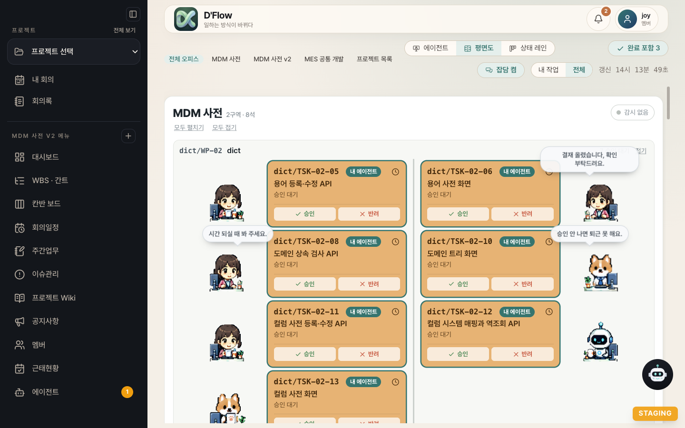
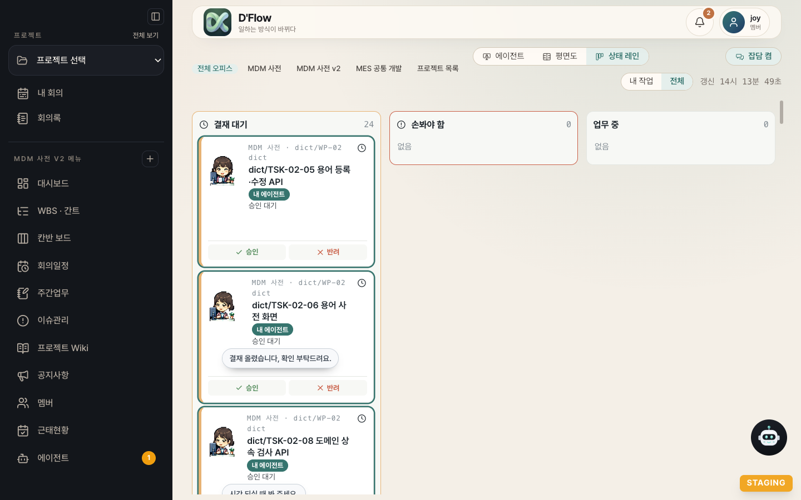
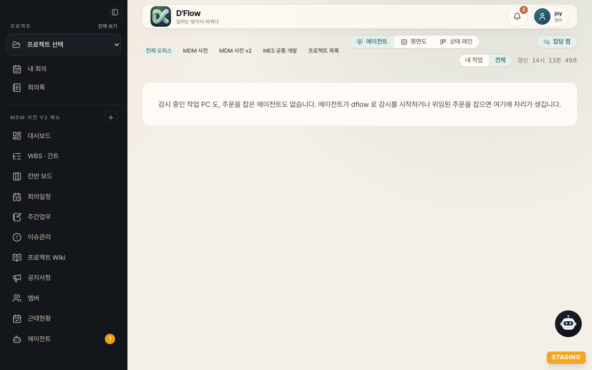
| 화면 표시 | 뜻 |
|---|---|
감시 중 · alice/mbp/lead 2/3 ~18:00 | 팀장이 감시 중이며, 슬롯 3개 중 2개가 일하고, 18:00 에 새 배정을 멈춥니다(허브 상단 상태줄). |
| 선행 대기 좌석 | 설계를 마치고 선행 작업을 기다리는 팀원입니다(wait_pred). |
| 설계 검토 대기 좌석 | 「설계만」으로 설계를 마치고 사람의 검토를 기다리는 작업입니다(wait_review). 결재 대기 수에는 들어가지 않습니다. 검토를 마친 한 건은 「이어서 시작」으로 구현을 넘깁니다. |
| 머지 충돌 | 팀장이 자동 해소를 세 번 시도해도 풀지 못해 사람이 머지해야 합니다. |
| 「이어서 시작」 버튼 | 끊기거나 응답이 없는 좌석을 그 PC 의 팀장이 다시 띄우도록 요청합니다(관리자·서브트리 관리자). |
| 「팀장 해제」 버튼 | 죽은 팀장의 서버 lease 를 강제로 풉니다. |
작업 상세의 진행 기록
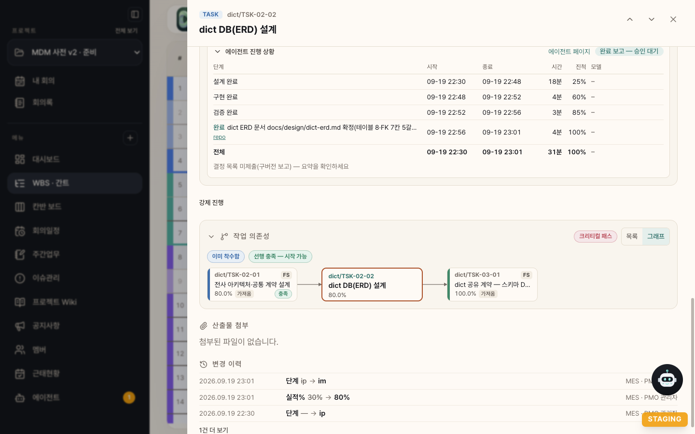
ip → im)를 보여 줍니다.WBS·칸반·대시보드
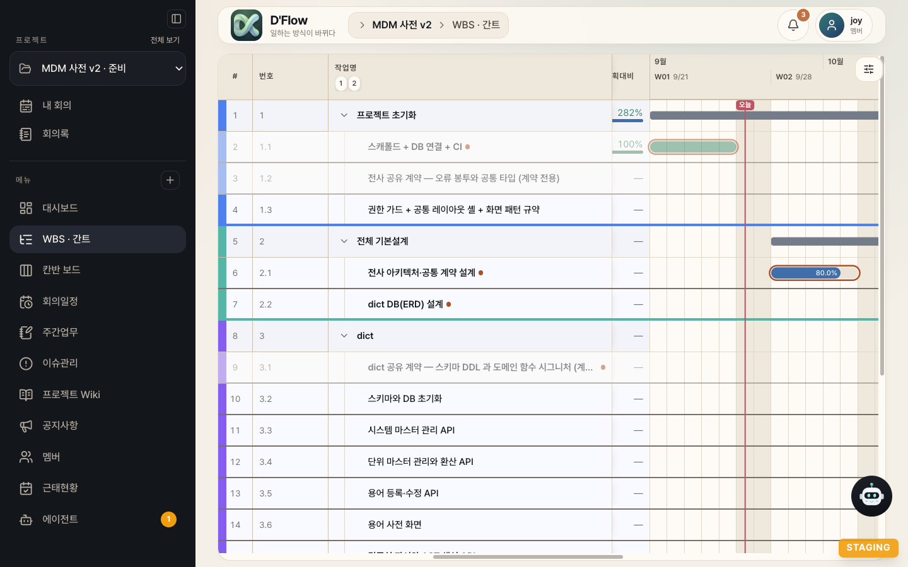
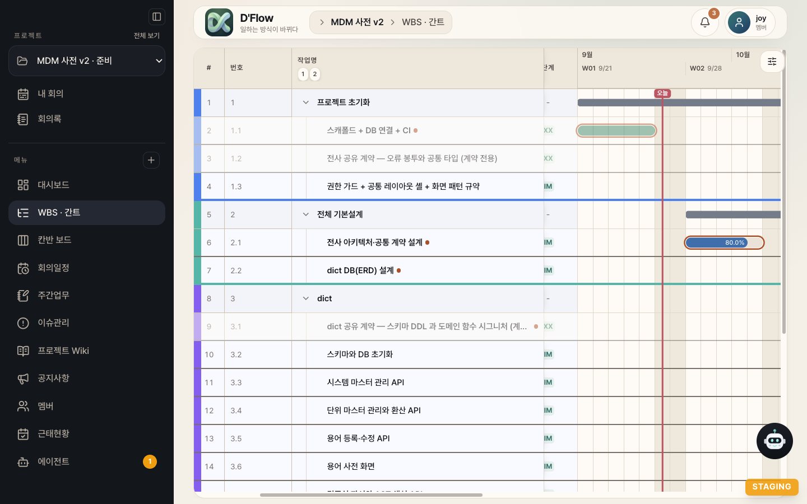
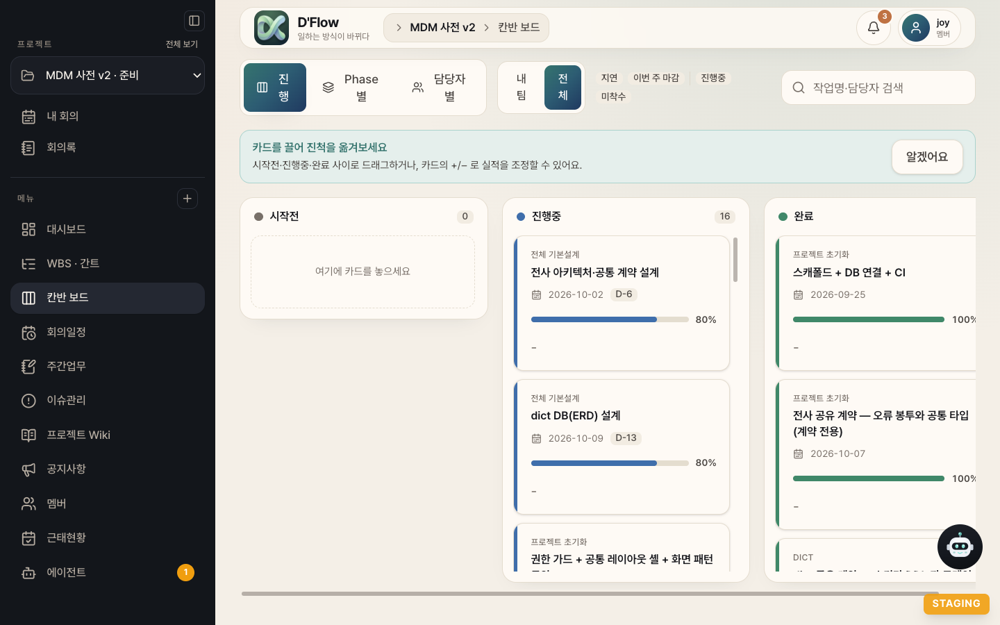
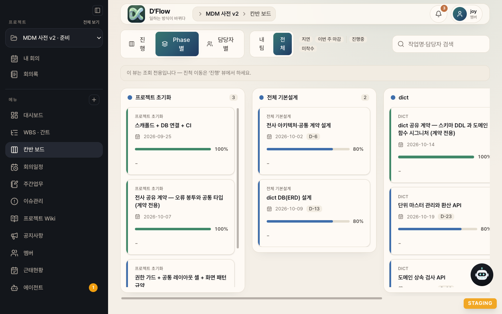
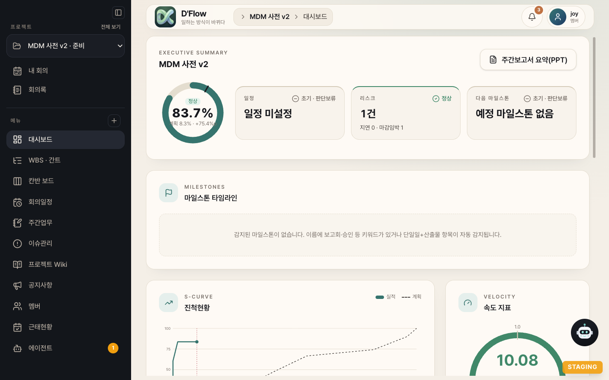
10팀원의 개발 사이클
팀원은 팀장이 넘긴 한 줄짜리 지시를 읽고, 자기 워크트리(<리포>/.claude/worktrees/dflow-<id8>)에서 /dflow-dev <id8> --worker 를 실행합니다. 각 단계는 별도 서브에이전트가 맡고, 게이트 판정은 팀원이 명령을 직접 실행해 확인합니다. 서브에이전트의 자기 신고만으로는 통과시키지 않습니다.
/dflow-dev 스킬 문서는 모든 단계에 공통인 안내 본문(SKILL.md)과 단계별 절차 파일(references/orch/)로 나뉘어 있습니다. 팀원은 지금 단계의 파일과 그 단계에 필요한 규율 절만 읽고, 컨텍스트가 압축되면 state.json 의 단계로 읽을 파일을 다시 찾습니다(2026-09-26 부터).
| 단계 | 하는 일 | 산출물과 게이트 | 모델 |
|---|---|---|---|
| 01 착수 | 명세·선행 검사, claim --design-first, 브랜치 agent/<id8>-<slug> 생성, 의존성 설치, 게이트 기준선 측정, 복잡도 점수로 모델 결정 | state.json, 기준선(테스트 수·실패 수) | - |
| 02 Design | 명세를 읽고 설계. 끝나면 build-start 로 ds → ip | design.md 에 접근·파일 목록·테스트 전략·수용 기준 매핑·불변 규칙 5절과 「구현 단위」 표 | 복잡도 3점 이상 opus, 미만 sonnet |
| 03 Build | 구현 단위(B1, B2…)마다 테스트 먼저 작성 후 구현, 단위마다 커밋. 변이 검증 기록을 남깁니다. | 기준선 대비 신규 실패 0, 테스트 수 감소 없음. build-log.md | sonnet(Design 이 opus 면 opus 권장) |
| 04 Verify | 읽기 전용 감사자 셋(spec·review·tests)과 작성자 하나가 동시에 돕니다. 작성자가 린트·변이 표본·E2E 를 실행하고 지적을 고칩니다. | 감사 지적 반영, 변이 표본에서 살아남은 변이 없음 | sonnet |
| 05 Refactor | 팀원 모드에서는 건너뜁니다(사람이 직접 돌리는 /dflow-dev 에서만). | 실패하면 그 커밋만 되돌림 | sonnet |
| 06 마감 | push → dflow.sh done --auto-links --decisions | 서버 상태 reported(승인 대기), 단계 im | - |
단계와 크레딧
as할당됨 0
ds설계 중 10
ip작업 중 30
rw반려·재작업 50
im검수 대기 80
xx완료 100
숫자는 그 단계에 들어갔을 때 WBS 실적%로 쓰이는 기본 크레딧입니다. 프로젝트 설정에서 5 단위로 바꿀 수 있고, xx 는 늘 100 이며 인접 값은 10 이상 벌어져야 합니다. rw 는 별도 단계가 아니라 반려 뒤 ip 로 돌아갈 때 쓰는 크레딧입니다.
stateDiagram-v2
direction LR
state "as 할당됨" as AS
state "ds 설계 중" as DS
state "ip 작업 중" as IP
state "im 검수 대기" as IM
state "xx 완료" as XX
[*] --> AS: 배정과 위임
AS --> DS: claim --design-first
DS --> DS: 선행 미충족이면 대기
DS --> IP: build-start
IP --> IM: 완료 보고
IM --> XX: 사람 승인
IM --> IP: 반려 (크레딧 rw)
XX --> IM: 승인 취소
IP --> AS: 반납 release
ds)에서 시작합니다. 선행이 이미 끝났으면 설계 직후 곧바로 ip 로 넘어가므로 사람 눈에는 보통 개발과 같습니다.설계 선행
선행 작업이 아직 구현 중이면, 팀원은 빈 슬롯에서 후속 작업의 설계를 먼저 해 둡니다. 설계가 끝났는데 선행이 끝나지 않았으면 build-start 가 거부되고, 팀원은 설계를 push 한 뒤 design_waiting 으로 자리를 비웁니다. 선행이 끝나면 팀장이 같은 워크트리로 다시 띄워 구현을 잇습니다. 한 번에 설계를 먼저 받는 작업은 기본 2건까지이며, DFLOW_DESIGN_AHEAD_MAX(0 이면 끔)로 조절합니다.
설계만·구현부터
팀장을 설계만으로 돌리면 팀원은 설계와 Design 게이트까지만 하고 build-start 를 부르지 않습니다. 설계를 agent 브랜치에 push 하고 design_review 로 끝내며, 좌석은 「설계 검토 대기」가 됩니다. 사람은 그 브랜치의 design.md 를 검토·수정합니다. 이어서 구현하려면 팀장을 구현부터로 다시 돌리거나(이 PC 의 검토 대기 설계를 모두 이어 갑니다), 좌석의 「이어서 시작」을 누릅니다(그 한 건만). 팀장이 기본 범위로 돌 때는 검토 대기 설계를 저절로 이어 가지 않습니다.
구현부터는 사람이 설계한 작업도 받습니다. 개발 브랜치의 <작업 폴더>/design.md 에 Design 게이트의 5개 절(접근, 파일 목록, 테스트 전략, 수용 기준 매핑, 불변 규칙)이 있어야 하며, 없거나 모자라면 팀원은 착수하지 않고 skipped design_missing·design_invalid 로 알립니다. 빠진 절을 에이전트가 대신 채우지 않습니다. 사람이 직접 돌릴 때는 /dflow-dev <번호> --scope design·--scope build 로 같은 동작을 씁니다.
PC 자원 줄 세우기
전체 테스트, 빌드, E2E, 변이 검증, 모든 gradlew·mvn, 의존성 설치는 heavy.sh 로 감쌉니다. 리포가 달라도 같은 PC 에서는 슬롯 K개까지만 동시에 돌고 나머지는 줄을 섭니다. 슬롯을 얻으면 HEAVY_SLOT slot-1 k=2 waited=14s 처럼 기다린 시간이 남습니다. 도커 명령은 별도 슬롯(기본 1개)을 씁니다. 게이트에서 새로 실패한 것이 모두 경과 시간을 단언하는 부하 민감 테스트이면, 그 테스트만 PC 를 독점한 채 다시 돌려 통과하면 실패로 치지 않습니다.
사람이 봐 둘 산출물
| 파일 | 내용 |
|---|---|
<작업 폴더>/design.md | 설계와 「담당자 확인 필요 결정」 절. 팀원이 스스로 고른 결정이 D 번호로 남고, 완료 보고의 결정 목록으로 서버에 갑니다. |
<작업 폴더>/build-log.md | 게이트 기록, 변이 검증 기록, 실행 모델 표, 설계 이탈, 인계 |
<작업 폴더>/state.json | 진행 단계(prepare·design·build·verify·reported·wait_pred·wait_review 등)와 기준선·모델 |
| 커밋 트레일러 | 모든 커밋에 DFlow-Order: <주문 UUID> 가 붙습니다. 승급했다면 DFlow-Escalate 도 붙습니다. |
11결정 요청에 답하기
팀원은 판단이 갈리는 대부분의 자리에서 기본값이나 근거가 강한 쪽을 스스로 고르고 기록만 남깁니다. 되돌리기 어려운 결정(데이터 삭제, 외부 공개, 다른 작업 산출물의 대폭 수정, 보안·권한 변경)에서만 멈추고 사람에게 묻습니다(blocked).
| 백엔드 | 답하는 법 |
|---|---|
| tmux | TMUX= tmux -L dflow attach 로 붙어 그 팀원 pane 에서 직접 답하거나, 팀장 세션에 <id8> <답> 으로 답합니다. |
| Orca | 그 팀원의 탭에서 직접 답합니다. |
기다리는 질문이 하나뿐이면 id8 없이 답해도 됩니다. 답을 기다리는 동안 그 팀원은 슬롯을 계속 쥡니다.
팀원이 도구 오류나 환경 문제를 만나면 팀장에게 이슈를 보고하고, 팀장이 같은 턴에서 판단해 지시를 돌려보냅니다. 그 기록은 팀장 체크아웃의 docs/dflow-team/issues.md 에 쌓입니다(커밋하지 않는 로컬 기록).
12승인과 머지
완료 보고된 작업은 서버에서 reported(승인 대기), 단계 im(검수 대기)입니다. 사람은 두 곳에서 승인하거나 반려할 수 있습니다.
- 에이전트 허브의 승인 큐와 오피스 좌석 카드: 관리자와 서브트리 관리자는 승인·반려를, 담당자 본인은 반려만 할 수 있습니다. 자기 완료를 자기가 승인하지 못하게 나눈 규칙입니다. 강제 진행 스텁이 남은 작업은 승인 버튼이 잠깁니다.
- WBS 작업 상세의 「진행 상황」: 프로젝트 관리자에게 승인·반려 버튼이 보이고, 승인 뒤에는 승인 취소·재작업 요청 버튼으로 바뀝니다.
반려할 때는 사유를 꼭 적습니다. 사유가 다음 재작업의 요구사항이 됩니다. 팀원이 스스로 고른 결정 중 하나를 바꾸고 싶으면 "D2 는 선택지 2로" 처럼 번호로 적습니다.
승인 뒤에 일어나는 일
- 팀장이 승인을 감지합니다. 결과가 도착했을 때나 30분 주기
TICK에 먼저 후보가 있는지 가볍게 확인하고(SWEEP_CANDIDATES), 있을 때만 승인 스윕을 돕니다. - 조상 먼저 머지합니다. 스택으로 쌓인 브랜치는 선행부터 개발 브랜치에
--no-ff로 머지하고, 머지 커밋에도DFlow-Order트레일러를 붙입니다. - 승인 뒤 변경을 막습니다. 완료 보고 뒤 그 브랜치에 새 변경이 생겼으면 머지하지 않고 「건너뜀(승인 뒤 변경)」으로 알립니다.
- 브랜치를 정리합니다. 머지된 agent 브랜치는 원격과 로컬에서 지웁니다.
dialect_check가 있으면 스윕마다 한 번 방언 검증을 돌립니다.
| 스윕 보고 | 뜻 |
|---|---|
머지됨 | 승인을 확인하고 개발 브랜치에 넣었습니다. |
승인 대기 | 아직 승인되지 않았습니다. |
반려: 재작업 필요 (<사유>) | 반려됐습니다. 다음 배정 때 팀원이 사유를 요구사항으로 삼아 같은 브랜치 위에 고칩니다. |
머지 실패(충돌) <파일,…> | 팀장이 해소 전용 팀원을 띄워 풉니다. 한 작업에 세 번까지 시도하고, 못 풀면 좌석표에 「머지 충돌」을 띄웁니다. |
건너뜀(조상 미승인) 외 | 선행이 승인되지 않았거나 조회 실패 등으로 이번에는 넘깁니다. |
자동 머지(automerge=1)
켜면 팀원이 완료 보고하는 즉시 팀장이 개발 브랜치에 머지하고 다음 작업으로 넘어갑니다. 후속 작업이 선행의 승인을 기다리지 않아 처리량이 늘지만, 승인은 사후 확인이 됩니다. 나중에 승인하면 미승인 표식만 지우고, 반려하면 「반려(머지됨): 되돌리기 또는 재작업 필요」로 알립니다. 되돌릴지(git revert -m 1) 재작업할지는 사람이 고릅니다. 팀장은 스스로 되돌리지 않습니다.
13멈추기·연장·재개
| 하고 싶은 일 | 방법 |
|---|---|
| 멈추기 | 팀장 세션에 "팀장 종료", "마감해", "그만"이라고 말합니다. 다른 터미널에서는 touch "$(git -C <팀장 체크아웃> rev-parse --git-path dflow-team.stop)" 로도 됩니다(20초 안에 알아챕니다). |
| 연장 | "내일 9시까지 연장"처럼 말합니다. 마감 중이면 마감을 취소합니다. |
| 특정 작업 빼기 | D'Flow 에서 그 작업의 위임(agent 태그)을 끕니다. |
| 멈춘 작업 이어받기 | 「멈춤」 표에 적힌 명령(/dflow-team <종료시각> --resume <id8>)을 쓰거나 오피스의 「이어서 시작」을 누릅니다. |
| 다른 계정으로 팀장 하나 더 | 주 체크아웃 루트에서 .claude/skills/dflow-team/scripts/lead-worktree.sh <이름> 으로 링크드 워크트리를 만들고 그곳에서 시작합니다. 같은 계정으로는 두 번째 팀장을 띄울 수 없습니다(SAME_IDENTITY_LEAD). |
마감
종료 시각이 되거나 종료 요청이 오면 새 배정을 멈춥니다. 결정 대기·무응답 팀원은 기다리지 않고, 진행 중 팀원은 TICK 두 번(최대 약 1시간)까지만 결과를 기다립니다. 그 뒤 작업별 집계 표와 「멈춤」 표를 보고하고 마지막 승인 스윕을 한 번 돕니다. agent 브랜치는 남기고, 살아 있는 팀원의 워크트리는 지우지 않습니다. 팀원은 팀장이 끝나도 하던 작업을 끝까지 합니다.
자동 재시작
팀장은 팀원이 응답 없이 멈추거나(생존 증거가 두 번 연속 그대로), pane 이 죽거나, 사용량 한도에 걸리면 같은 워크트리·같은 슬롯으로 다시 띄웁니다. 한도에 걸린 경우는 해제 시각 10분 뒤에 한 번 이어갑니다. 한 작업당 세 번을 넘으면 「멈춤」 표로 내리고 재시작 명령을 알려 줍니다. 주간 사용량이 90% 를 넘으면 동시 팀원을 2명으로 줄이고, 95% 를 넘으면 새 작업을 띄우지 않습니다.
14고급 설정
팀원 첫 턴 컨텍스트 줄이기 (PC별 선택)
팀원은 켜진 플러그인과 MCP 를 끈 채로 뜹니다. .dflow.local 에 아래 키를 적으면 스킬 목록 같은 기본 컨텍스트를 더 줄여 매 턴의 토큰을 아낄 수 있습니다. dflow-* 와 대상 리포의 프로젝트 스킬은 무엇을 적어도 남습니다.
| 키 | 값 |
|---|---|
worker_keep_skills | auto 면 그 PC 의 ~/.claude/CLAUDE.md(와 그 안에서 @ 로 포함한 파일)에서 "쓴다"고 적힌 사용자 스킬만 남깁니다. "먼저 고르지 않는다" 같은 부정 문장에 나온 이름은 남기지 않습니다. 지침을 읽지 못하면 하나도 끄지 않습니다. 이름을 쉼표로 적거나 none 도 됩니다. |
worker_keep_plugins | auto 면 지침에 <이름>@<마켓> 이 나오거나 플러그인·MCP 를 말하는 문장에 이름이 나오는 플러그인만 켜 두고, 그 플러그인의 MCP 서버를 살려 줍니다. 지침이 claude-in-chrome 을 쓰라고 하면 그것도 켭니다. |
worker_skills_off | 그 밖에 끌 스킬 이름(쉼표) |
worker_output_style | 팀원의 출력 스타일(예: default) |
전역 설정 파일은 건드리지 않고 팀원 실행에만 설정 조각을 넘깁니다. 적은 이름이 그 PC 에 없으면 경고 한 줄만 내고 진행합니다.
Build 모델 시험
배정표가 opus 로 정한 Build 중 일부를 sonnet 으로 돌려 비용과 품질을 비교하는 스위치입니다. 기본은 꺼져 있습니다.
build_model_trial=sonnet
build_model_trial_rate=30 # 또는 대상을 직접 지정
build_model_trial_tasks=TSK-02-05,WP-03대상 판정은 작업 ID 로 결정되므로 재개해도 같습니다. 시험 중인 sonnet Build 가 게이트 1차에서 실패하거나, 같은 구현 단위를 두 번째로 인계하거나, 테스트를 초록으로 만들지 못하고 끝나면 그 자리를 opus 가 이어받습니다(승급). 결과는 build-log.md 의 「실행 모델」 표와 작업 상세의 모델 칸에 남습니다.
게이트 범위 대응표 .dflow-gates
리포 최상위에 두면 Build 게이트는 바뀐 모듈의 테스트만 돌고, 전체 스위트는 Verify 에서 한 번만 돕니다. 여러 모듈을 가진 큰 리포에서 시간을 크게 줄입니다.
full ./gradlew test && pnpm -r test prepare pnpm --filter "web^..." build docs/ - backend/core/ ./gradlew :core:test :api:test
도커 허용
팀원은 인원과 관계없이 기본적으로 도커를 쓰지 않습니다. D'Flow 작업에 docker 태그가 있을 때만 팀장이 허용을 넘기고, 그 팀원도 PC 전역 도커 슬롯을 잡은 동안만 씁니다. no_docker=1 은 태그가 있어도 막습니다.
Gradle 리포
킷 설치 때 gradle.properties 에 권장 세 키(org.gradle.caching=true, org.gradle.workers.max=3, org.gradle.daemon.idletimeout=600000)가 있는지 점검합니다. 팀원을 여럿 돌리는 PC 라면 ~/dflow-kit/install.sh --gradle-pc 로 PC 전역 안전망(테스트 JVM 옵션, 테스트 캐시 제외)도 추가할 수 있습니다. 심볼릭 링크로 스킬을 쓰는 리포에서는 반드시 리포 인자 없이 이 단독 형태로 씁니다.
환경변수
| 변수 | 뜻 |
|---|---|
DFLOW_TEAM_MAX | 인원 상한을 1~6 으로 덮습니다. |
DFLOW_DESIGN_AHEAD_MAX | 설계 선행 동시 건수(기본 2, 0 이면 끔) |
DFLOW_WORKER_MCP=keep · DFLOW_WORKER_PLUGINS=keep | 팀원의 MCP·플러그인 끄기를 되돌립니다. |
DFLOW_API_BASE | 그 세션에서만 서버 주소를 덮습니다(스테이징 시험). |
15혼자 쓰는 경로
팀장 없이 작업 한두 건을 직접 돌릴 때는 아래 스킬을 씁니다. 팀장도 내부에서 같은 스킬을 씁니다.
| 상황 | 명령 |
|---|---|
| 내 작업 보기 | "내 할당 작업 보여줘" 또는 dflow.sh list --scope assigned |
| 작업 1건 개발 | /dflow-dev <순번|TSK-ID> [--only design|build|verify|refactor] [--model opus|sonnet] |
| 위임 작업을 하나씩 자동 착수 | /dflow-poll [--interval 300] [--until HH:MM] [--all]. 낮 시간 반자동 전용이고, 동시에 여러 건은 /dflow-team 을 씁니다. |
| 승인된 작업 머지 | "승인했어, 머지해" 또는 /dflow-merge [<ref>…] |
› /dflow-dev 3 ● TSK-00-02-01 claim 완료. 브랜치 agent/6b3ea02e-dev-standards 생성. 복잡도 0점 → 설계 모델 sonnet. Design 단계 시작… … ● 검증 통과. push 완료 → 승인 대기로 보고했습니다. D'Flow 웹에서 승인해 주세요.
| dflow.sh 명령 | 뜻 |
|---|---|
me · doctor · profiles | 신원·설치 확인·토큰 목록 |
list [--scope available|claimed|assigned|all] · show <순번|id8> | 조회 |
claim <ref> [--design-first] · build-start <ref> | 착수 · 설계 끝 구현 시작(ds → ip) |
progress <순번> <0-99> "<요약>" | 진행 보고. 100 은 done 으로만 갑니다. |
done <순번> "<요약>" --auto-links --decisions <파일> | 완료 보고. push 가 먼저 끝나 있어야 합니다. |
release <순번> | claim 포기, 대기로 되돌림 |
dflow.sh --as bob@example.com list 가 맞습니다. 뒤에 붙이면 조용히 다른 신원으로 실행됩니다.
16문제 해결
팀장이 시작을 거부할 때
| 코드 | 원인 | 처리 |
|---|---|---|
DIRTY | 팀장 체크아웃에 커밋하지 않은 변경이 있습니다. | 커밋하거나 되돌립니다. |
NOT_DEFAULT_BRANCH | 현재 브랜치가 개발 브랜치도 detached HEAD 도 아닙니다. | 개발 브랜치로 전환합니다. |
NO_REMOTE_DEV_BRANCH | 개발 브랜치가 원격에 없고 자동 생성도 실패했습니다. | 개발 브랜치를 push 하거나 권한을 확인합니다. |
KIT_NOT_PUSHED | 원격 기본 브랜치의 스킬이 옛 판입니다. | 킷 커밋을 기본 브랜치에 push 합니다. |
OLD_DFLOW_DEV · OLD_DFLOW_MERGE | 스킬이 옛 판입니다. | 킷을 갱신합니다. |
CONFIG (NO_LOCAL·NO_DFLOW·NO_DEV_BRANCH…) | 설정 파일 문제 | 5장대로 채웁니다. |
NO_PROJECT | 리포와 D'Flow 프로젝트가 연결돼 있지 않습니다. | project_id 또는 project_map 을 적습니다. |
AUTH | 토큰 인증 실패 | 토큰을 다시 발급합니다. |
LOCKED | 같은 체크아웃에서 다른 팀장이 돌고 있습니다. | 그 팀장이 끝난 게 확실하면 잠금 디렉터리를 지우고 다시 시작합니다. |
LEAD_LEASE_HELD | 같은 계정의 팀장이 다른 clone·PC 에서 돌고 있습니다. | 죽었다면 최대 3분 뒤 풀립니다. 바로 넘겨받으려면 --takeover. |
SAME_IDENTITY_LEAD | 같은 리포 다른 워크트리에 같은 계정 팀장이 있습니다. | 팀장 하나에 인원과 WP 범위를 더 줍니다. |
SPACE_IN_PATH | 리포 경로에 공백이 있습니다. | 공백 없는 경로로 옮깁니다. |
UNTIL_PAST · UNTIL_TOO_FAR | 종료 시각이 지났거나 7일을 넘습니다. | 다시 입력하거나 종료 요청 전까지 를 씁니다. |
NO_CLAUDE_CLI · NO_TMUX · ORCA_OLD | 도구가 없거나 오래됐습니다. | 2장대로 설치·갱신합니다. |
WARN GRADLE_TUNING | Gradle 권장 설정이 빠졌습니다(경고만). | 14장을 따릅니다. |
dflow.sh 종료 코드
| exit | 원인 | 처리 |
|---|---|---|
| 2 | 사용법·설정 오류, progress 100, push 전 done | 사용법과 설정을 확인하고, push 한 뒤 다시 보고합니다. |
| 3 | 토큰 만료·폐기 | /account 에서 다시 발급합니다. |
| 4 | 선행 미충족(dependency_not_met), 상태 충돌(409) | dflow.sh show 로 확인합니다. 재시도로 뚫지 않습니다. |
| 5 | 권한 부족(스코프·담당자·역할) | 스코프를 다시 발급하거나 담당자·멤버십을 고칩니다. |
| 6 | 네트워크·서버 오류 | 주소와 서버 상태를 확인하고 다시 시도합니다. |
| 7 | 기능 꺼짐·프로젝트 미등록(404) | dflow.sh me 로 진단합니다. |
| 10 | 사람이 웹에서 중단했습니다. | 다시 시도하지 않고 멈춥니다. |
자주 겪는 상황
| 상황 | 원인과 처리 |
|---|---|
| 위임했는데 팀장이 가져가지 않습니다. | 담당자가 팀장 토큰의 계정인지, 명세가 채워졌는지, 위임 범위(WP)를 좁히지 않았는지 확인합니다. |
| 팀원이 "착수 불가"로 끝납니다. | 명세가 비었거나 선행 산출물이 없습니다. 웹에서 명세를 채우거나 선행을 먼저 끝냅니다. |
| 팀원이 도커를 쓰려다 막힙니다. | 그 작업에 docker 태그를 답니다. |
| 좌석이 갱신되지 않습니다. | heartbeat 훅이 등록됐는지, 킷 갱신 뒤 --hooks 로 다시 설치했는지 확인합니다. |
| 「머지 충돌」 표시가 남습니다. | 자동 해소가 실패한 것입니다. 사람이 그 브랜치를 개발 브랜치에 직접 머지하면 다음 스윕이 감지해 표시를 지웁니다. |
| 병렬 작업끼리 같은 파일을 고쳐 의미가 어긋납니다. | 텍스트 충돌이 없어도 계약이 갈릴 수 있습니다. WBS 에서 같은 파일을 건드릴 작업 사이에 선행을 걸거나 공통 계약을 별도 작업으로 뺍니다. |
| 새 워크트리에서 "Is this project you created or trust?" 화면이 뜹니다. | 팀장이 화면을 읽어 자동으로 답합니다. Claude Code 판에 따라 이 화면이 뜨지 않을 수도 있습니다. |
계속 풀리지 않으면 dflow.sh doctor 출력, env | grep DFLOW(토큰 값은 빼고), git status, 팀장 체크아웃의 docs/dflow-team/issues.md 를 모아 D'Flow 관리자에게 전달합니다.
17부록: 출력 형식
로그나 팀원 화면에서 보는 줄의 뜻입니다. 모두 스크립트와 스킬 문서의 원문 형식입니다.
PHASE_RESULT {PHASE} done|fail # Design·Build·Refactor 서브에이전트 보고 UNIT_DONE <단위> · UNIT_HANDOFF <단위> # Build 구현 단위 완료·인계 VERIFY_EXEC done|fail # Verify 작성자의 실행 보고 AUDIT_RESULT {ROLE} <지적 수> # Verify 감사자(spec·review·tests) HEAVY_SLOT slot-<i> k=<K> waited=<초>s # 무거운 명령 슬롯 획득 HEAVY_BUSY # exit 75, 실패가 아니라 다시 부르라는 뜻 MUTATION_RESULT <ID> caught|survived|busy rc=<rc> sec=<초> e2e=<yes|no> log=<경로> BASELINE_REUSED exit=<n> key=<key> … # 다른 팀원이 잰 기준선 재사용 GATE_SCOPE module <명령> # .dflow-gates 로 좁힌 게이트
{TSK} {ID8} <branch|-> <head_sha|-> <done_exit|-> <status> <한 줄 사유 또는 질문>
# status: done · skipped · design_waiting · design_review · needs-merge · blocked · cancelled · failed <사유>RESULT_READY <경로…> · PANE_DEAD <경로…> · TICK · STOP_REQUESTED · LEASE_LOST <사유> CAPACITY_OK free=64% swap=87% load=0.9 heavy_wait=0/2 pressure=normal … CAPACITY_USAGE_CAP max=2 weekly=91 … # 주간 사용량 90% 이상 SWEEP_CANDIDATES n=<N> <id8…> · SWEEP_NONE DOCKER=allow tag=docker · DOCKER=ban tag=none
claimed a1b2c3d4 build-started a1b2c3d4 reported(승인 대기) — PM 승인은 웹에서 원격에 브랜치 agent/… 가 없습니다 — git push 후 다시 시도하세요.
팀장 PC 의 ~/.dflow/events.jsonl 에는 team.start, team.spawn, team.result, team.blocked, team.sweep, team.conflict, team.lost, team.stop 같은 이벤트가 한 줄씩 쌓입니다. 서버가 아니라 로컬 기록입니다.